1 Results
1.1 Households Experience High Indoor PM\(_{2.5}\), with Episodic Extremes Missed by Outdoor Monitoring
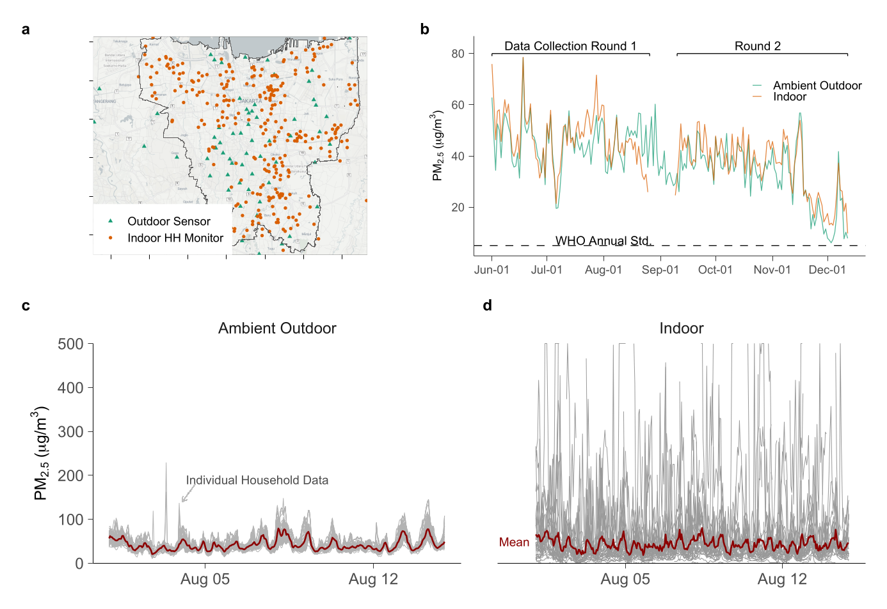
Figure notes
This figure summarizes the spatial coverage of the sample and the level and temporal variation of indoor and outdoor PM\(_{2.5}\) in Jakarta. (a) Locations of respondents and installed air quality monitoring hardware. There are 283 indoor air quality monitors (orange) installed in respondent homes, and 63 low-cost sensors (green) to measure respondent-specific outdoor air quality. (b) Daily average outdoor and indoor pollution levels in Jakarta (\(N = 195\) monitored days). To account for the uneven spatial distribution of outdoor sensors, we first computed district-level averages for outdoor readings, which were then aggregated to produce a daily citywide average. Indoor pollution levels were averaged across all households on a daily basis. The gap in the indoor data from August 26 to September 8 occurred during a transition period when the air quality hardware was being moved between households. (c) Hourly outdoor PM\(_{2.5}\) from August 1–14, 2024 (\(N = 283\) households; 336 hourly time points). Gray lines show hourly PM\(_{2.5}\) concentrations associated with each individual, while the maroon line shows the mean concentration across all 63 sensors. (d) Hourly indoor PM\(_{2.5}\), analogous to (c), with gray lines corresponding to each individual low-cost sensor.
Our first finding is that average indoor PM\(_{2.5}\) concentrations closely map ambient outdoor PM\(_{2.5}\) concentrations on average, but episodic spikes of indoor PM\(_{2.5}\) are often much higher than those outdoors. Overall, these patterns imply that in Jakarta, households experience higher levels of PM\(_{2.5}\) indoors than outdoors on average.
We first establish that both indoor and outdoor PM\(_{2.5}\) concentrations are at very high levels. During our study period, the mean indoor daily PM\(_{2.5}\) concentration was 42.3 \(\mu g/m^3\), while the mean outdoor daily PM\(_{2.5}\) concentration was 39.5 \(\mu g/m^3\), or an average Indoor/Outdoor (I/O) ratio of 1.07. Both levels were about eight times higher than the WHO annual standard of 5 \(\mu g/m^3\), as shown in Fig. 1.
In addition to persistently high pollution levels, we find that indoor spaces also experience extreme episodic events. Hourly indoor and outdoor pollution levels at the individual household level for a representative two-week period from our sample is displayed in Fig. 1d. The figure shows frequent short-lived episodes of very high indoor PM\(_{2.5}\) concentrations. For example, while outdoor readings exceeded \(100~\mu g/m^3\) in 0.8% of hours, indoor readings exceeded \(100~\mu g/m^3\) in 6% of hours.
Given how much time our respondents spend indoors, these measurements capture a substantial share of personal PM\(_{2.5}\) exposure for women and children in our study population, though they cannot resolve within-home spatial variation. In our accompanying survey, we find that respondents (90% of whom were women) reported spending 79% of their time at home. We focused on parents of elementary school children, who reported that their children spent an average of 70% of their time indoors. Importantly, the sample targets low- and middle-income households, offering rare insights into a population largely overlooked in existing research on indoor air quality. More details on our sampling approach are provided in Section 3.1.
Overall, these findings reveal that while outdoor readings capture average indoor concentrations, they fail to account for the pollution burden from episodic indoor spikes. Individuals with similar average pollution concentrations may experience very different intensities and frequencies of severe pollution events, patterns that are missed when relying solely on outdoor pollution data. The health impacts of repeated short-term spikes remain poorly understood, underscoring the need for research that considers pollution spikes, not just average levels.
1.2 High Infiltration of Outdoor PM\(_{2.5}\) into Indoor Spaces
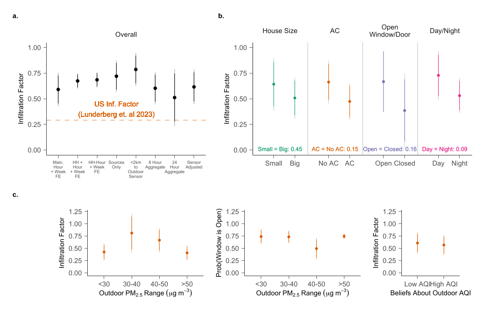
Figure notes
This figure summarizes the estimated outdoor-to-indoor infiltration factor, its heterogeneity across household characteristics, and the lack of short-run behavioral responses to higher outdoor pollution. (a) Infiltration factors, defined by the regression of indoor PM\(_{2.5}\) on outdoor PM\(_{2.5}\) (Equation 1). Each point corresponds to a different specification. Specifications 1–5 use hourly observations and constitute our main specifications. The first specification controls for hyperlocal source variables (waste burning frequency, household smoking, kitchen source presence, typical cooking hours, and distance to main road), outdoor temperature, humidity, and hour-of-day and week fixed effects. The second and third add household fixed effects and household-by-hour fixed effects, respectively. The fourth does not include any control beyond hyperlocal source variables. The fifth restricts the sample to households within 2 km of an outdoor sensor. Specifications 6 and 7 are robustness checks that aggregate the data to 8-hour and 24-hour means, respectively. Specification 8 (Sensor Adjusted) re-estimates the first specification with indoor and outdoor PM\(_{2.5}\) converted to reference-monitor units, using side-by-side deployments of the indoor device, the outdoor sensor and a reference monitor (SI Appendix, Fig. S9); it shows how the estimate changes when readings are corrected for differences between the sensor types. All regressions except specification 4 control for outdoor temperature and humidity. The hourly specifications use \(N = 148,939\) household-hours after conditioning on nonmissing covariates and the 24-hour aggregate specification uses \(N = 8,910\) household-days. (b) Heterogeneity in infiltration factors by household and behavioral characteristics, including house size, air conditioning (AC) presence, whether a window or door was open, and time of day (day/night). Each regression includes hyperlocal source controls, outdoor temperature, humidity, and hour-of-day and week fixed effects. P-values for tests of equality between coefficients are shown in the respective panels. Whether the window/door was open came from a survey with \(N = 453\) observations. (c) Household behavior in response to outdoor pollution levels. The first panel shows heterogeneity in infiltration factors as a function of outdoor PM\(_{2.5}\) concentrations, binned into four ranges. The second panel shows the probability of having a window or door open as a function of outdoor PM\(_{2.5}\) concentrations. The third panel shows heterogeneity in infiltration factors based on households’ baseline beliefs about whether outdoor air quality is unhealthy (high AQI) versus not (low AQI). Points represent regression coefficients; darker error bars show 90% confidence intervals, and lighter error bars show 95% confidence intervals. Errors are clustered at the household and date-hour level.
Figure S9Sensor validationSupplement
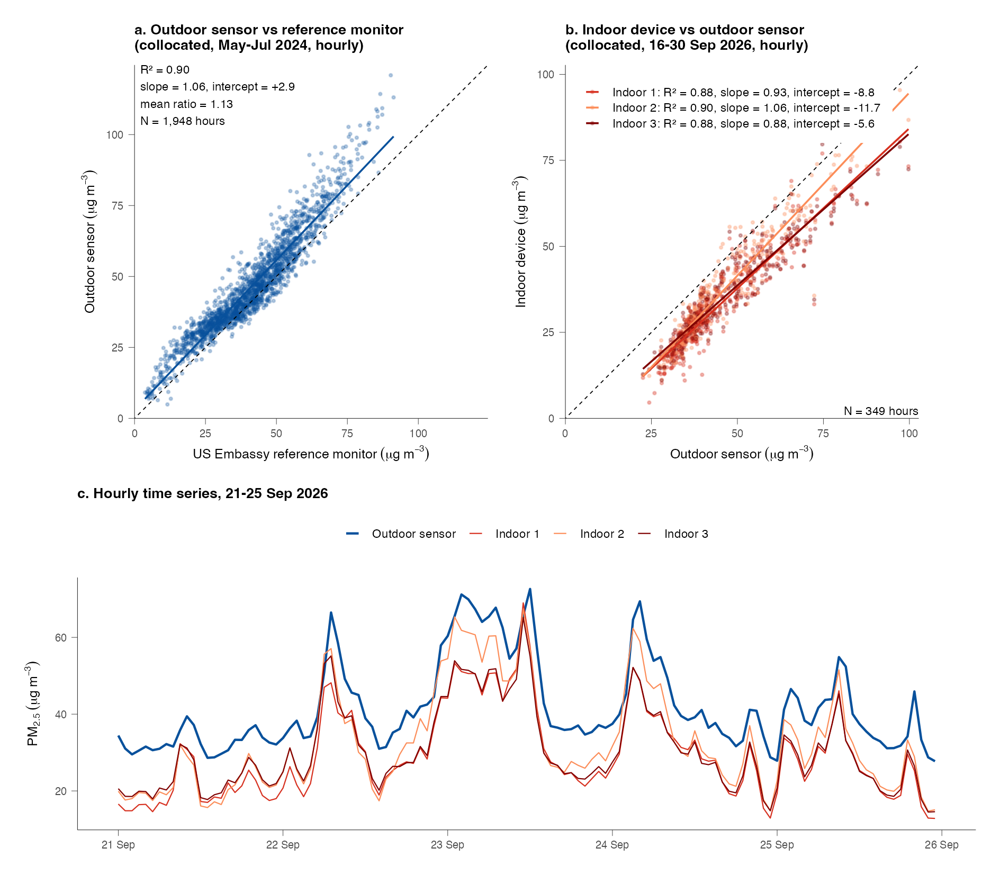
Figure notes
(a) Hourly PM\(_{2.5}\) from an Airly outdoor sensor (Plantower PMS5003) against a collocated US Embassy reference monitor, May–July 2024. (b) Hourly PM\(_{2.5}\) from three indoor devices (Cubic PM2008M) against a collocated Airly outdoor sensor (Plantower PMS5003), 16–30 September 2026. We exclude the first day, during which the devices were warming up, and a short local pollution spike from waste burning on 26 September (05:00–07:59) that saturated the instruments. (c) Hourly time series from panel b, 21–25 September 2026. In each scatter plot, dashed lines show the 1:1 line and solid lines OLS fits.
To assess the role of ambient outdoor PM\(_{2.5}\) in high indoor PM\(_{2.5}\) levels, we model the infiltration of the former into indoor spaces, where ambient outdoor refers to background PM\(_{2.5}\) concentrations measured by our citywide sensor network.
We estimate the infiltration factor of ambient outdoor PM\(_{2.5}\). We find that a 1 \(\mu g /m^{3}\) increase in ambient outdoor PM\(_{2.5}\) is associated with a .59 to .78 \(\mu g/m^3\) increase in indoor PM\(_{2.5}\) in the same hour (main specification: .59; 95% CI [0.43, 0.75]; \(P < 0.001\)), as seen in Fig. 2a. These numbers are 2 to 3 times the infiltration factor typically estimated in the United States (Burke et al. 2022; Lunderberg et al. 2023) and are broadly consistent with existing evidence from low- and middle-income settings, where estimates are scarcer than in high-income settings and often come from studies covering a small number of homes or short monitoring periods (Hossain et al. 2021; Baquié et al. 2024; Saha et al. 2025).
We also estimated a distributed lagged model, showing that infiltration is happening within the hour (SI Appendix, Fig. S1), as opposed to estimated lagged effects up to 6 hours in high-income settings (Burke et al. 2022; Lunderberg et al. 2023). While many studies use daily or multi-hour averaged concentrations to approximate steady-state conditions and to absorb lagged dynamics between outdoor and indoor PM\(_{2.5}\) (Chen and Zhao 2011), our distributed lag model results indicate that the outdoor-indoor relationship is essentially contemporaneous in our setting, justifying the use of hourly observations. In Fig. 2a, we show that the estimated infiltration factor is robust to 8-hour (.60, 95% CI [0.44, 0.76]; \(P < 0.001\)) and 24-hour (.51, 95% CI [0.24, 0.78]; \(P < 0.001\)) aggregations. We note that aggregating to 24-hour means substantially reduces the effective sample size and increases standard errors, because we were unable to collect continuous data for every single hour for all households; results are nevertheless robust to alternative weighting schemes discussed in the Methods (Section 3.1 and SI Appendix, Fig. S2 and S3).
Figure S1Infiltration Factor with Lagged Outdoor \(PM_{2.5}\)Supplement
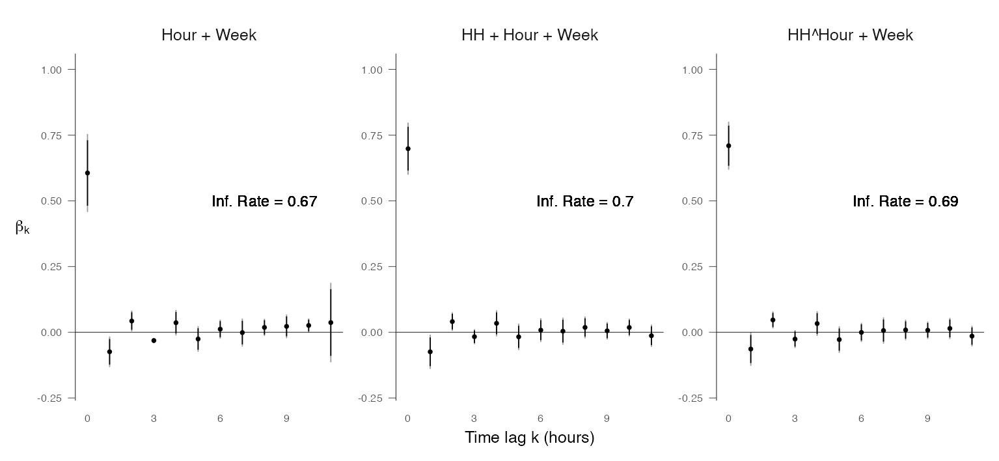
Figure notes
Infiltration factor, showing the relationship between changes in outdoor concentration and changes in indoor concentrations. This shows the lags in the previous 11 hours. The model controls for hyperlocal source variables (waste burning frequency, household smoking, kitchen source presence, typical cooking hours, and distance to main road), outdoor temperature, humidity, and hour-of-day and week fixed effects. Points represent mean estimates; darker error bars show 90% confidence intervals, and lighter error bars show 95% confidence intervals. Errors are clustered at the household level.
Figure S2Missing Indoor PM\(_{2.5}\) DataSupplement
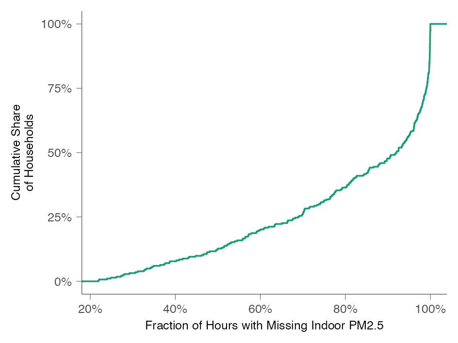
Figure notes
Empirical cumulative distribution function of missing indoor PM\(_{2.5}\) data. Each observation represents a household; the x-axis shows the fraction of that household’s hourly PM\(_{2.5}\) readings that are missing, and the y-axis shows the cumulative share of households at or below that fraction.
Figure S3Infiltration Factor With Varying WeightsSupplement
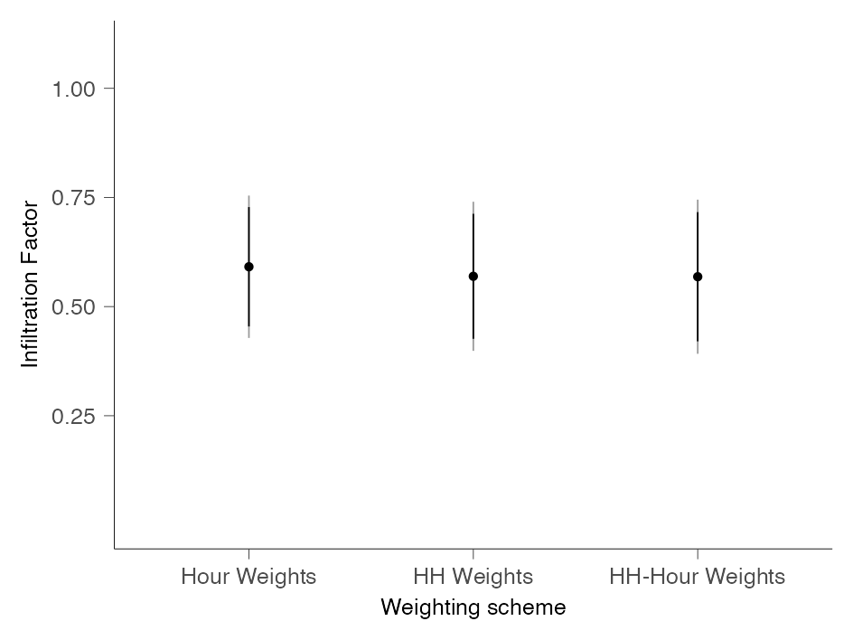
Figure notes
Each column reports the coefficient on outdoor PM\(_{2.5}\) (the infiltration factor) from estimating the main infiltration specification. Column 1 is our main specification, which does not have any weights. This implicitly upweights households with more available data. Column 2 weights by the inverse of the household-specific observation rate, upweighting households with more missing data. Column 3 weights by the inverse of the household-by-hour observation rate, upweighting household-hour cells with more missing data. Observation rates are defined as the fraction of non-missing indoor PM\(_{2.5}\) readings within the relevant grouping. Darker error bars show 90% confidence intervals, and lighter error bars show 95% confidence intervals. Standard errors are clustered at the household and date-hour level.
Ambient outdoor PM\(_{2.5}\) is measured with error, since sensors cannot capture the hyperlocal conditions at each household. Measurement error would attenuate the estimated infiltration coefficient toward zero, with greater attenuation for households located farther from a sensor. Consistent with this, we show in SI Appendix, Fig. S4, that the estimated infiltration factor is stable at approximately 0.8 when we restrict to households within 500m, 1km, and 2km of an outdoor sensor, before declining to 0.59 in the full sample. Adjusting for the difference in sensor types using collocation data gives 0.62 (Fig. 2a, Sensor Adjusted), or 0.50 under an alternative calibration that allows for measurement error in the outdoor sensor (SI Appendix). Across specifications and calibrations, the infiltration factor lies between 0.50 and 0.78, 1.7 to 2.7 times the typical US estimate of about 0.29 (Lunderberg et al. 2023).
Figure S4Infiltration Factor at Varying Distance to Outdoor SensorSupplement
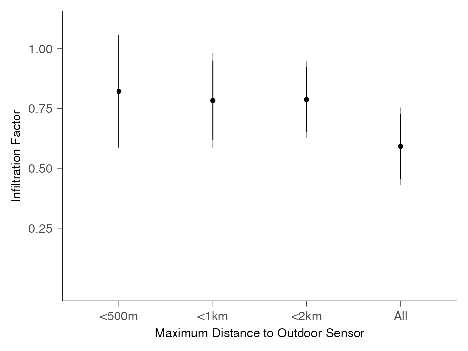
Figure notes
Each point reports the coefficient on outdoor PM\(_{2.5}\) (the infiltration factor) from estimating Equation 1 with hour-of-day and week fixed effects, controlling for hyperlocal source variables, outdoor temperature, and humidity. The sample is progressively restricted to households located within 0.5km, 1km, and 2 km of the nearest outdoor air quality sensor; the rightmost point uses the full sample with no distance restriction. Darker error bars show 90% confidence intervals, and lighter error bars show 95% confidence intervals. Standard errors are clustered at the household and date-hour level.
We leverage the breadth of our survey data to examine drivers of variation in the infiltration factor (Fig. 2b). Our results suggest that differences in infiltration factors are partly driven by long-term household structural characteristics and in particular ventilation, which influences the air exchange rate (Chen and Zhao 2011). In particular, we find suggestive differences based on air conditioning (AC) ownership (p = 0.15) and whether the monitor room has an open versus closed window or door (p = 0.16) during the measurement hour. In Jakarta’s hot and humid climate, households without AC often rely on natural ventilation, increasing their exposure to outdoor pollution.
In high-income settings, infiltration factors are primarily driven by short-term behavioral adjustments (Burke et al. 2022; Baquié et al. 2024). We find no evidence of such responses in Jakarta. Four analyses show that households are not actively taking short-term actions to reduce infiltration.
First, while previous literature has found that infiltration factors decline at high outdoor PM\(_{2.5}\) concentrations, suggesting that people actively modify their behavior to limit exposure at higher levels of outdoor pollution (Burke et al. 2022; Lunderberg et al. 2023), we do not find evidence of this relationship in our setting. In fact, infiltration increases at higher PM\(_{2.5}\) concentrations. This pattern, shown in Fig. 2c, could have several drivers, including concentration gradients between outdoor and indoor pollution, meteorological conditions correlated with outdoor pollution levels, or the presence of high-emission hyperlocal pollution sources (Lunderberg et al. 2023; MacNeill et al. 2012).
Second, we assess whether ventilation behaviors (e.g., opening windows or doors) respond to outdoor pollution levels. If households actively manage infiltration, we would expect them to close windows when pollution is high. However, Fig. 2c shows no clear relationship between window or door openness and outdoor pollution levels. While opening or closing windows is a short-term behavior that can, in theory, be adapted, we may expect that households do not keep windows closed in a hot and humid climate like Jakarta, where natural ventilation is important for cooling.
Third, we assess whether infiltration varies with ambient outdoor temperatures (SI Appendix, Fig. S5). While the estimated infiltration factor is slightly higher for temperatures above 30\(^o\)C, this difference is not statistically significant. Overall, we find that infiltration is approximately stable across the range of ambient outdoor temperatures observed in our sample, suggesting that temperature-driven changes in ventilation behaviors do not drive substantial differences in infiltration.
Figure S5Infiltration Factor at Varying Ambient Outdoor TemperaturesSupplement
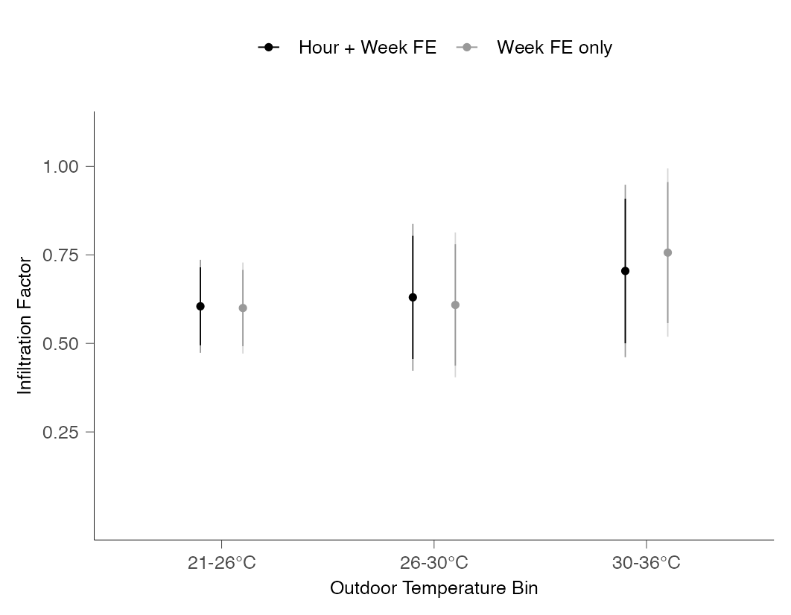
Figure notes
Each black point reports the coefficient on outdoor PM\(_{2.5}\) (the infiltration factor) from estimating Equation 1 with hour-of-day and week fixed effects, controlling for hyperlocal source variables and humidity. Each grey point reports the coefficient on outdoor PM\(_{2.5}\) (the infiltration factor) from estimating Equation 1 but without hour-of-day fixed effects. The sample is successively restricted to observations with outdoor temperature between 21-26\(^o\)C, 26-30\(^o\)C, and 30-36\(^o\)C. Darker error bars show 90% confidence intervals, and lighter error bars show 95% confidence intervals. Standard errors are clustered at the household and date-hour level.
Finally, we find no evidence that beliefs translate into meaningful protective action. Infiltration factors do not differ between households who perceive outdoor air as unhealthy and those who consider it relatively healthy, as shown in Fig. 2c. Households were classified based on whether they generally thought outdoor air pollution was unhealthy (high AQI vs. low AQI) before monitors were installed. The disconnection between beliefs and protective action is consistent with other research finding low protective behavior in low-income settings (Greenstone, Lee, and Sahai 2021; Chowdhury et al. 2025).
1.3 Indoor and Hyperlocal Sources of Indoor PM\(_{2.5}\)
We leverage our rich panel of PM\(_{2.5}\) data and survey to quantify the contribution of different sources of indoor PM\(_{2.5}\). With these high infiltration factors, the largest share of indoor air pollution in Jakarta originates from the outdoors. Overall, we estimate that 56% of mean indoor PM\(_{2.5}\) comes from ambient outdoor pollution (Fig. 3b), a share in the range of estimates reported for high-income countries (Lunderberg et al. 2023).
While ambient outdoor pollution is the primary driver of persistently high indoor PM\(_{2.5}\) concentrations, our surveys shed light on the important role of indoor and hyperlocal sources in both average levels and episodic spikes of indoor PM\(_{2.5}\). In particular, in Fig. 3, we document the impact of indoor smoking and suggestive evidence on neighborhood waste burning.
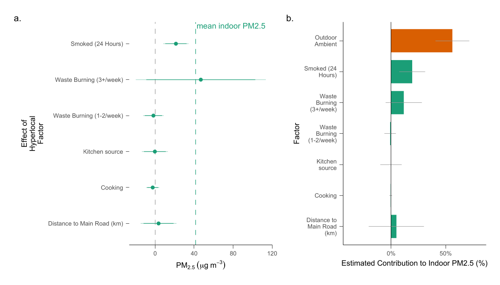
Figure notes
This figure quantifies how ambient outdoor and hyperlocal sources contribute to indoor PM\(_{2.5}\) levels. (a) Effects of hyperlocal pollution sources on indoor PM\(_{2.5}\), estimated from Equation 1: whether the household reported any smoking indoors in the 24 hours preceding the interview, whether the household reported observing 1-2 or 3+ waste burning events in the neighborhood in the 7 days preceding the interview, whether the monitor is in or near the kitchen, whether the hour of day is one in which the household reported cooking in the 24-hour time-use recall, and distance to the nearest main road (km). The model controls for outdoor temperature, and humidity, with hour-of-day and week fixed effects. The dashed green line indicates mean indoor PM\(_{2.5}\), providing a benchmark against which to interpret the magnitude of each hyperlocal source coefficient. (b) Estimated mean contribution of each source to indoor PM\(_{2.5}\), calculated by multiplying each regression coefficient by the sample mean of its corresponding variable and expressing the product as a share of mean indoor PM\(_{2.5}\). Panels (a) and (b) use the same sample of 283 households and \(N = 148{,}939\) household-hours after conditioning on nonmissing covariates. Error bars are computed by scaling the upper and lower bounds of each coefficient’s confidence interval by the sample mean of the corresponding variable and dividing by mean indoor PM\(_{2.5}\). Points represent regression coefficients; darker error bars show 90% confidence intervals, and lighter error bars show 95% confidence intervals. Standard errors are clustered at the household and date-hour level.
We find that households who reported indoor smoking within the last 24 hours experienced significantly higher indoor pollution levels. Smoking was associated with 21 \(\mu g/m^3\) (95% CI [8.30, 34.4]; \(P < 0.001\)) higher average hourly indoor PM\(_{2.5}\) concentrations, a 51% increase compared to the sample mean. These patterns are remarkably well aligned with global evidence that average measured indoor PM\(_{2.5}\) is 20 to 30 \(\mu g / m^3\) higher in smoking than non-smoking households (Semple et al. 2015). In our model, smoking explains approximately 19% of mean indoor PM\(_{2.5}\). As a complementary measure of source importance, an LMG R\(^2\) decomposition yields a ranking of sources consistent with Fig. 3 (SI Appendix, Table S1).
Table S1Source Contribution to Mean Indoor PM\(_{2.5}\)Supplement
| Source | Reg. Estimate | p.value | Mean Value of Source | Mean Contribution | \(R^2\) Contribution |
|---|---|---|---|---|---|
| Outdoor Ambient | 0.59 | 0.000 | 39.41 | 56% | 33% |
| Smoked (24 Hours) | 21.33 | 0.001 | 0.38 | 19% | 23% |
| Kitchen source | -0.28 | 0.968 | 0.31 | 0% | 0% |
| Cooking | -2.49 | 0.469 | 0.08 | 0% | 0% |
| Distance to Main Road (km) | 3.52 | 0.707 | 0.57 | 5% | 0% |
| Waste Burning (1-2/week) | -1.76 | 0.743 | 0.21 | -1% | |
| Waste Burning (3+/week) | 46.85 | 0.168 | 0.10 | 12% |
Table notes
Regression estimates are from Figure 3a, a fixed-effects model of hourly indoor PM\(_{2.5}\) on source variables with hour-of-day and week fixed effects; standard errors are clustered at the household and date-hour level. “Reg. Estimate" reports the coefficient on each source. "Mean Value of Source" is the sample mean of the corresponding variable (Figure 3b). “Mean Contribution" is the product of the coefficient and the sample mean, expressed as a share of mean indoor PM\(_{2.5}\). “\(R^2\) Contribution" reports the proportional contribution of each source to explained variance using the Lindeman-Merenda-Gold (LMG) decomposition from a linear model with hour and week indicators. The LMG decomposition aggregates across levels of categorical variables (e.g., waste burning frequencies), so a single \(R^2\) contribution is reported for waste burning overall.
Neighborhood-level waste burning may be an additional source of indoor air pollution in Jakarta, though we cannot pin down its contribution precisely. The point estimate suggests that households in areas with at least three waste-burning events per week (11% of the sample) have higher average indoor PM\(_{2.5}\) concentrations, which would account for approximately 12% of mean indoor PM\(_{2.5}\) (95% CI [-4.6%, 28.7%]). The wide confidence interval includes zero, consistent with our inability to identify a precise effect from self-reported event data.
Beyond the difficulty of surveying, waste burning occurs outdoors but at spatial scales finer than our sensor network resolves. Thus it is likely that outdoor sensors partially capture these burn events: households reporting at least three burning events per week have outdoor PM\(_{2.5}\) that are 4.1 \(\mu g/m^3\) higher on average, increasing to 5.1 \(\mu g/m^3\) for households living within 2 km of a sensor (SI Appendix, Table S2). This is consistent with evidence that PM\(_{2.5}\) from ground-level combustion decays over hundreds of meters (WHO Regional Office for Europe 2013). However, households reporting frequent burning may also live near other outdoor pollution sources, so we cannot cleanly attribute this differential to waste burning alone. We thus suggest interpreting these estimates with caution.
Table S2Association Between Reported Waste Burning and Outdoor PM\(_{2.5}\)Supplement
| Dependent Variable: | Outdoor PM2.5 | |
| Closest 3 Sensors | HH Within 2km of Outdoor Sensor | |
| Model: | (1) | (2) |
| Variables | ||
| Waste Burning (1-2/week) | 0.570 | 0.431 |
| (0.779) | (0.770) | |
| Waste Burning (3+/week) | 4.06*** | 5.12*** |
| (1.06) | (1.79) | |
| Outdoor Temperature | -0.351 | 0.182 |
| (0.248) | (0.260) | |
| Outdoor Humidity | -0.182*** | -0.164*** |
| (0.043) | (0.048) | |
| Fixed-effects | ||
| Week FE | Yes | Yes |
| Hour FE | Yes | Yes |
| Fit statistics | ||
| Observations | 759,777 | 394,345 |
| R\(^2\) | 0.38432 | 0.37470 |
| Within R\(^2\) | 0.00992 | 0.01250 |
Table notes
Each column regresses outdoor PM\(_{2.5}\) on household-reported waste burning frequency in the neighborhood over the preceding 7 days, controlling for outdoor temperature and humidity, with hour-of-day and week fixed effects. Column 1 assigns each household the mean PM\(_{2.5}\) reading from the three nearest outdoor sensors. Column 2 restricts the sample to households located within 2 km of an outdoor sensor. Clustered (respondent and date-hour FE) standard errors are in parentheses. Signif. Codes: ***: 0.01, **: 0.05, *: 0.1.
We additionally examine episodic PM\(_{2.5}\) spikes, defined as hours in which the hour-to-hour change in indoor PM\(_{2.5}\) exceeds one standard deviation of the overall indoor PM\(_{2.5}\) distribution. Episodic spikes are of particular interest because sharp hourly increases are more likely to reflect discrete hyperlocal emission events than the gradual infiltration of ambient outdoor pollution, which varies more smoothly over time. Notably, the probability of an episodic spike was 3.2 percentage points higher in smoking households than in non-smoking households. Smoking is the dominant contributor, accounting for 57% of the mean spike probability, followed by outdoor PM\(_{2.5}\) (28%) and waste burning (23%) (shares do not sum to 100% because kitchen location and distance to main road enter negatively, as detailed in SI Appendix, Table S3). We present a decomposition of source contributions to spikes in SI Appendix, Fig. S6, mirroring the analysis shown in Fig. 3, and the analogous LMG R\(^2\) decomposition in SI Appendix, Table S3.
Figure S6Source Contributions to PM\(_{2.5}\) SpikesSupplement
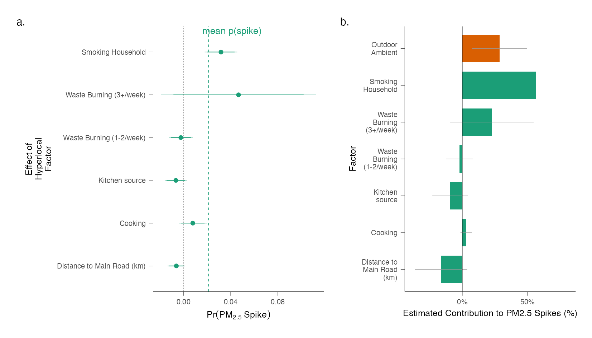
Figure notes
Analogous to Figure 3 but with PM\(_{2.5}\) spikes as the outcome variable. Spikes are defined as hours in which the hour-to-hour change in indoor PM\(_{2.5}\) exceeds one standard deviation of the overall indoor PM\(_{2.5}\) distribution. (a) Coefficient estimates from estimating Eq. (1) with the spike indicator as the dependent variable. The dashed green line indicates the sample mean spike probability. (b) Estimated mean contribution of each source to PM\(_{2.5}\) spikes, calculated by multiplying each regression coefficient by the sample mean of its corresponding variable and expressing the product as a share of the mean spike probability. Error bars reflect 95% confidence intervals, computed by scaling the upper and lower bounds of each coefficient’s confidence interval by the corresponding sample mean. Standard errors are clustered at the household and date-hour level.
Table S3Source Contribution to Spikes in Indoor PM\(_{2.5}\)Supplement
| Source | Reg. Estimate | p.value | Mean Value of Source | Mean Contribution | \(R^2\) Contribution |
|---|---|---|---|---|---|
| Outdoor Ambient | 0.000 | 0.008 | 39.41 | 28% | 2% |
| Smoking Household | 0.032 | 0.000 | 0.38 | 57% | 54% |
| Kitchen source | -0.006 | 0.180 | 0.31 | -9% | 2% |
| Cooking | 0.008 | 0.191 | 0.08 | 3% | 1% |
| Distance to Main Road (km) | -0.006 | 0.109 | 0.57 | -16% | 5% |
| Waste Burning (1-2/week) | -0.002 | 0.663 | 0.21 | -2% | |
| Waste Burning (3+/week) | 0.047 | 0.164 | 0.10 | 23% | |
| 19% |
Table notes
Estimates from a fixed-effects regression of a binary spike indicator on source variables, with hour-of-day and week fixed effects; standard errors are clustered at the household and date-hour levels. A spike is defined as an hourly PM\(_{2.5}\) reading that exceeds the preceding hour by at least one standard deviation. “Reg. Estimate" reports the coefficient on each source (from Figure S6). “Mean Value of Source" is the sample mean of the corresponding variable. “Mean Contribution" is the product of the coefficient and the sample mean, expressed as a share of PM\(_{2.5}\) spike probability. “\(R^2\) Contribution" reports the proportional contribution of each source to explained variance using the Lindeman-Merenda-Gold (LMG) decomposition from a linear model with hour and week indicators. The LMG decomposition aggregates across levels of categorical variables (e.g., waste burning frequencies), so a single \(R^2\) contribution is reported for waste burning overall.
In addition to smoking and neighborhood waste burning, there are likely other hyperlocal pollution sources contributing to the observed levels and episodic spikes in indoor air pollution but our data is not well suited to draw any conclusive evidence on these. For example, a major contributor to indoor air pollution that has been documented extensively is the combustion of solid fuels and kerosene for cooking. However, in Indonesia, the widespread adoption of LPG cookstoves has largely eliminated variation in cooking fuel use (Astuti, Day, and Emery 2019); in our survey, 98% of households reported using LPG cookstoves for cooking. This was the result of Indonesia’s national LPG conversion program, which reached more than 50 million households. Across the measurement studies compiled by Imelda (Imelda 2020), average PM\(_{2.5}\) concentrations are roughly 150 \(\mu g/m^3\) lower in households cooking with LPG than with kerosene, and the program reduced infant mortality.
Gas cookstoves can still elevate PM\(_{2.5}\) through food-derived emissions, particularly relevant in Indonesia where frying is common. For example, in a controlled experiment, frying on a gas stove produced short-lived kitchen peaks of several hundred \(\mu g/m^3\), about six times higher than in the adjoining room (Huboyo, Tohno, and Cao 2011), whereas in peri-urban African households cooking with LPG, 24-hour kitchen PM\(_{2.5}\) averaged about 50 \(\mu g/m^3\) with no elevation during cooking hours (Shupler et al. 2024). While cooking with LPG cookstoves may still generate large episodic spikes in pollution, our data do not include detailed information on cooking activities, preventing us from drawing insights on this source of indoor pollution. Besides, we do not find that typical cooking hours and whether the air monitor is located in the kitchen impacts measured levels of indoor PM\(_{2.5}\) (Fig. 3), which may be due partly to the small size and open layout of housing dwellings in our setting.
Analogously, we find that while distance to a main road is negatively associated with the probability of indoor PM\(_{2.5}\) spikes (SI Appendix Table S3 and Fig. S6a), it does not carry explanatory power on average PM\(_{2.5}\) levels (Fig. 3), which may reflect the density of Jakarta’s road network. For example, 58% of our sample lives within 500 meters of a main road (SI Appendix, Fig. S7).
Figure S7CDF of household distance to roadsSupplement
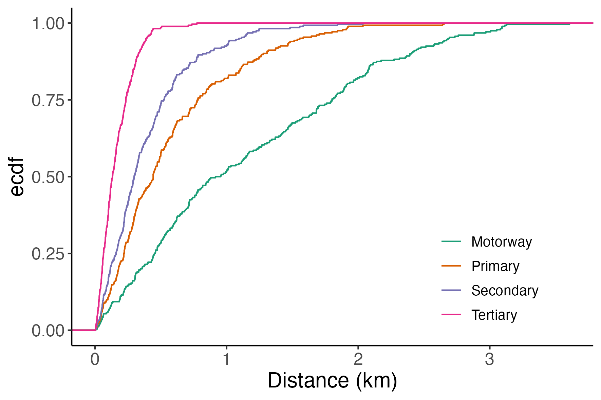
Figure notes
This figure shows the cumulative distribution of each household’s distance to the nearest road, by road type. Motorways are limited-access highways or toll roads, primary roads are major arterial roads connecting districts and cities, secondary roads are collector roads connecting neighborhoods, and tertiary roads are local residential streets.
1.4 Heterogeneity by Income
Households across the income distribution experience similar levels of ambient outdoor pollution concentrations, but lower-income households experience higher concentrations of indoor PM\(_{2.5}\), as displayed in Fig. 4a. Moving from the highest to the lowest income quartile in our sample is associated with an increase of 31.3 \(\mu g/m^3\) in mean PM\(_{2.5}\). Overall, the lowest-income households experience more than double the indoor PM\(_{2.5}\) levels of the highest-income households. This finding is consistent across various aggregation techniques used to calculate the mean (SI Appendix, Fig. S8).
Figure S8Robustness: Mean \(PM_{2.5}\) Under Various Aggregation MethodsSupplement
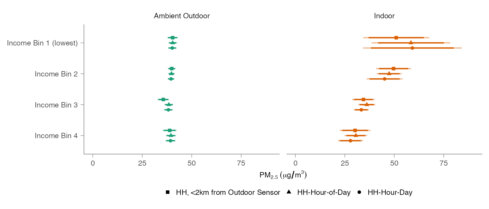
Figure notes
Mean outdoor ambient (left) and indoor (right) \(PM_{2.5}\) concentrations across income quartiles, aggregated using three different methods to show robustness. HH, \(<2\)km from Outdoor Sensor, calculates a single mean \(PM_{2.5}\) value per household, restricting the sample to households located within 2 km of an outdoor sensor to ensure proximity-based comparability. HH-Hour-of-Day, aggregates data by computing the mean \(PM_{2.5}\) concentration for each household at each hour of the day. HH-Hour-Day uses mean \(PM_{2.5}\) concentrations at the level of each household-hour-date. These mean \(PM_{2.5}\) are then regressed onto the income quartile. Points represent mean estimates; darker error bars show 90% confidence intervals, and lighter error bars show 95% confidence intervals. Errors are clustered at the household level.
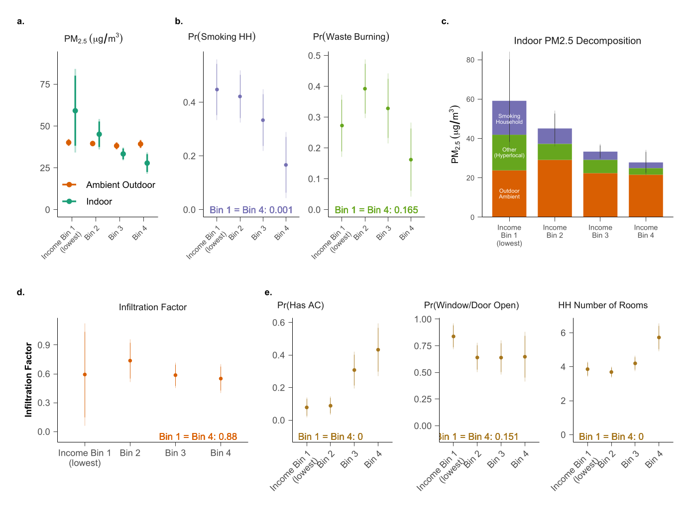
Figure notes
This figure shows how indoor PM\(_{2.5}\) and its determinants vary across the income distribution. (a) Average indoor and outdoor ambient PM\(_{2.5}\) by income quartile. (b) Prevalence of hyperlocal pollution sources by income quartile: probability of any household member smoking in the past 24 hours, and probability of observing neighborhood waste burning in the past 7 days. (c) Decomposition of mean indoor PM\(_{2.5}\) by income quartile into outdoor ambient (orange), other hyperlocal sources (green), and smoking household (purple) contributions. The outdoor ambient contribution is calculated by multiplying income-quartile-specific infiltration factors by quartile-specific mean outdoor PM\(_{2.5}\). The smoking contribution is calculated analogously using quartile-specific smoking coefficients and prevalence. The remaining difference is attributed to other hyperlocal sources. (d) Infiltration factors by income quartile, estimated by interacting outdoor PM\(_{2.5}\) with income quartile indicators in Equation 1, controlling for hyperlocal source variables, outdoor temperature, humidity, and hour-of-day and week fixed effects. (e) Housing characteristics by income quartile: probability of having air conditioning, probability of having a window or door open at the time of interview, and number of rooms in the household. Each point is the quartile-specific mean from a regression of the characteristic on income quartile indicators with no intercept. Darker error bars show 90% confidence intervals, and lighter error bars show 95% confidence intervals. Standard errors are clustered at the household and date-hour level. P-values for tests of equality between Bin 1 and Bin 4 are shown in panels b, d, and e. Panels (a), (c), and (d) use the 283 households with non-missing indoor PM\(_{2.5}\) data and up to \(N = 152{,}519\) observed monitor-hours, with smaller regression \(N\) where covariates are missing. Panels (b) and (e) use one household survey observation for each of the same 283 households.
We find that this heterogeneity in indoor PM\(_{2.5}\) concentrations across the income spectrum is driven by indoor sources. We estimate that smoking is the biggest driver of this heterogeneity. In Fig. 4b, we show that indoor smoking is significantly less common among higher-income households, translating into a lower contribution of smoking to indoor PM\(_{2.5}\) as shown in Fig. 4c. Overall, we estimate that smoking differences explain 45% of the difference in average indoor PM\(_{2.5}\) between the lowest and highest income quartiles.
We attribute the remaining 55% of the difference in average indoor PM\(_{2.5}\) between the lowest and highest income quartiles to other hyperlocal factors, rather than differential infiltration of outdoor ambient PM\(_{2.5}\). Given the imprecision of these estimates, we do not decompose this residual further. Consistent with this interpretation, however, we find that waste burning is about half as likely to be reported by participants in the highest income quartile than other participants, though measurement challenges limit the robustness of this finding (Fig. 4b). While cooking fuel combustion has been documented as another major contributor to indoor air pollution, the near-universal adoption of LPG cookstoves in our sample largely eliminates variation in cooking fuel use, limiting our ability to further investigate this channel. We note that high-income households’ greater number of rooms and prevalence of AC (Fig. 4e) are consistent with lower indoor PM\(_{2.5}\) concentration, though the remaining 55% likely reflects a combination of unobserved pollution sources, housing characteristics, and behaviors that we cannot separately identify.
The heterogeneity of indoor and hyperlocal pollution sources across the income gradient is also consistent with a greater burden of episodic pollution for low-income households. We find that households in the lowest income quartile experience PM\(_{2.5}\) spikes (defined as hours in which the hour-to-hour change in indoor PM\(_{2.5}\) exceeds one standard deviation of the overall indoor PM\(_{2.5}\) distribution) 3% of the time, compared to just 0.4% for households in the highest income quartile, a statistically significant difference (\(p = 0.021\)). Since ambient outdoor pollution rarely reaches such extreme jumps in Jakarta, these spikes likely result from more frequent episodic emissions occurring inside or near the home, which may be affected by behaviors.
We do not find statistically significant heterogeneity in infiltration factors by income (Fig. 4d). Note that the higher prevalence of indoor sources among lower-income households complicates inference: in a mass-balance framework, natural ventilation both increases outdoor infiltration and dilutes indoor emissions, and these opposing forces may mask true differences in infiltration across the income distribution.